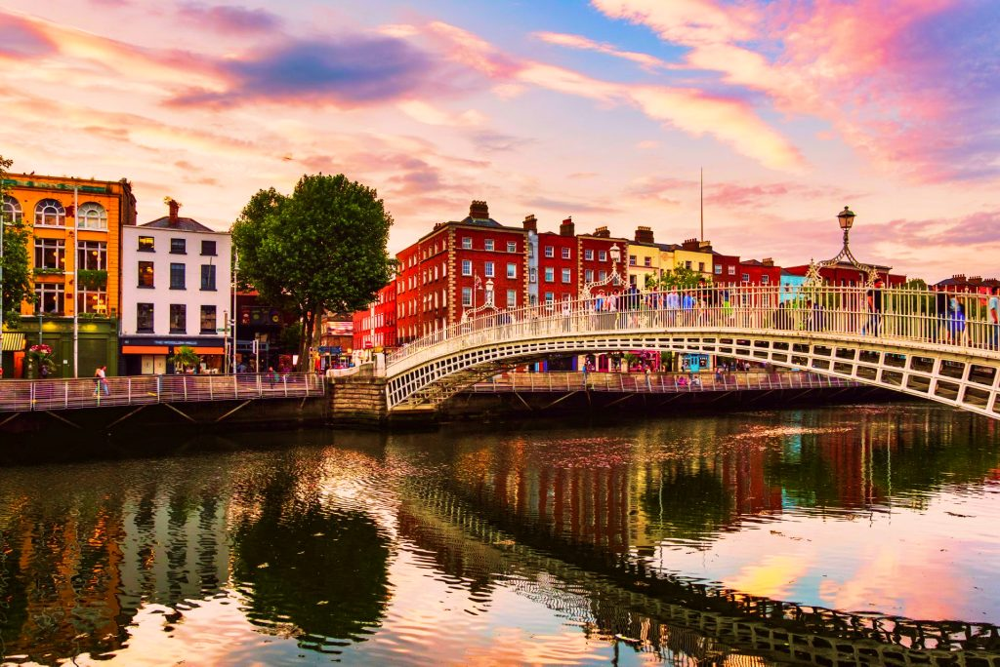
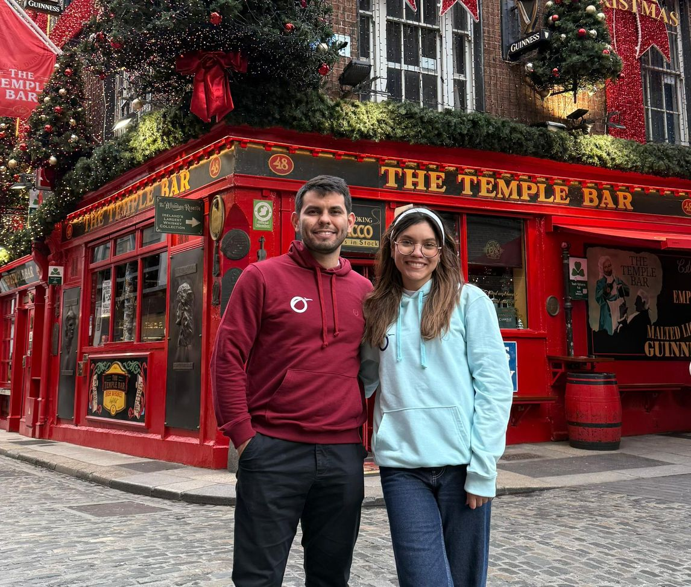
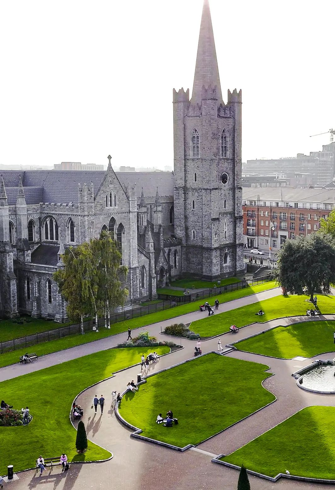

Estudiá inglés en Irlanda y trabajá legalmente mientras vivís una experiencia internacional.
Programa de inmersión lingüística de larga duración que te permite estudiar inglés y trabajar legalmente en Irlanda, con hasta 20 horas semanales durante el curso y 40 horas en período de vacaciones.
Fechas de viaje
Contamos con fechas de inicio durante todo el año, según institución y disponibilidad.
Te acompañamos en todo el proceso y te asesoramos para elegir la mejor fecha según disponibilidad de cupos.
Work &
Study Ireland
Viví una experiencia internacional completa en uno de los destinos más elegidos por estudiantes de todo el mundo.
Irlanda combina educación de calidad, oportunidades laborales y un entorno seguro, convirtiéndose en el lugar ideal para estudiar, trabajar y crecer.
Destinos disponibles en Irlanda
Dublín: La capital y el principal centro de oportunidades laborales y académicas.
Limerick: Una ciudad más tranquila, con menor costo de vida y excelente calidad educativa.
Cork:
Una de las ciudades más atractivas de Irlanda, ideal para quienes buscan equilibrio entre estudio, trabajo y calidad de vida.
Permiso de estudiante:
La gestión de la visa se realiza al llegar a Irlanda y te permite trabajar durante tu estadía.
Búsqueda
de Empleo:
Te acompañamos en la preparación de tu CV y entrevistas para facilitar tu inserción laboral.
Opciones de trabajo:
Podés acceder a empleos en sectores como gastronomía, hotelería, ventas y servicios.

Qué NO incluye:
- Seguro médico.
- Registro/permisos migratorios correspondientes.
- Pasaje aéreo.
- Gastos iniciales y personales.
- Transferencias/costos administrativos,
si corresponden.
Requisitos:
- Ser mayor de 18 años.
- Pasaporte vigente.
- Inscribirse en un curso elegible de tiempo completo.
- Cumplir los requisitos económicos y migratorios vigentes.
Qué incluye
el programa:
- Clases de preparación online previas al viaje.
- Curso de inglés de 25 semanas + 2 meses de vacaciones.
- Asesoría personalizada antes y después del viaje.
- Carta para apertura de cuenta bancaria en Irlanda.
- Clases extra de conversación, pronunciación y gramática.
- Preparación de CV con orientación personalizada.
- Talleres y actividades (los talleres y actividades pueden variar dependiendo del destino y la escuela) dentro y fuera de la escuela.
- Acceso a plataformas y recursos de la institución.
